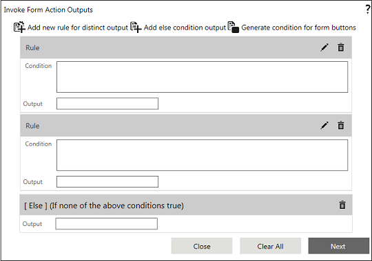
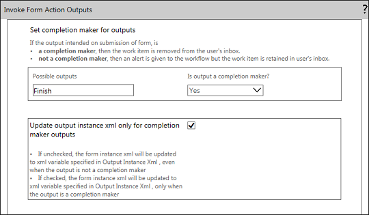
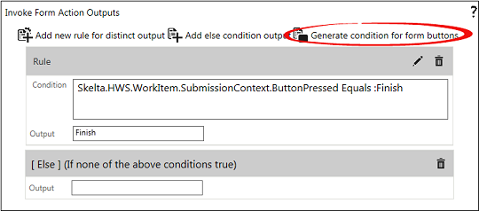

No
Purpose
This property of Invoke form enables you to:
Or
Only for the outputs which are of type Completion makers.
Note: For generating possible distinct outputs, use buttons of the following Button Type:
- Submit
- Custom (used for submitting the form)
Description


